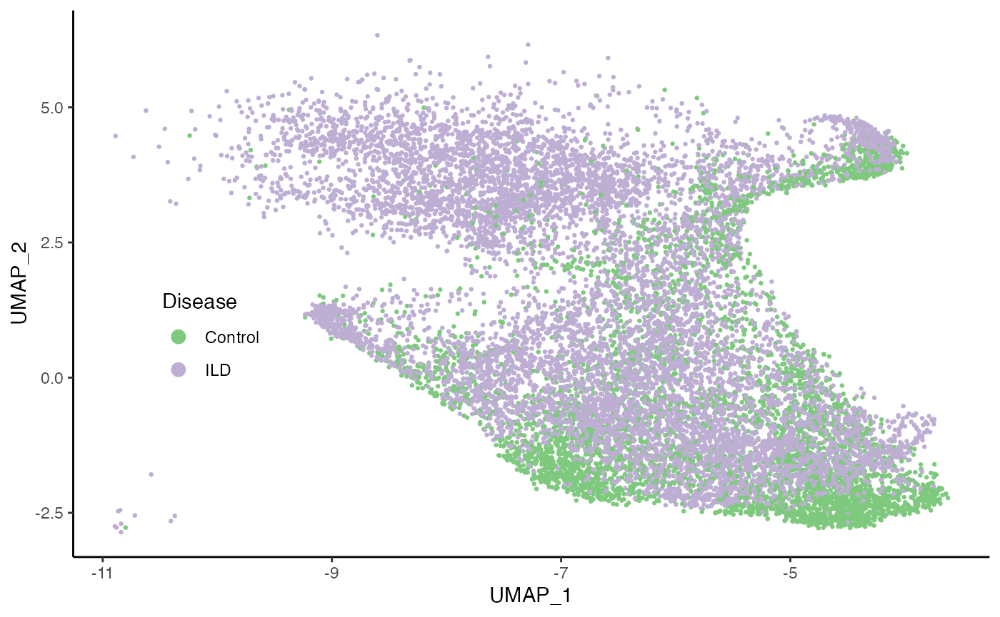
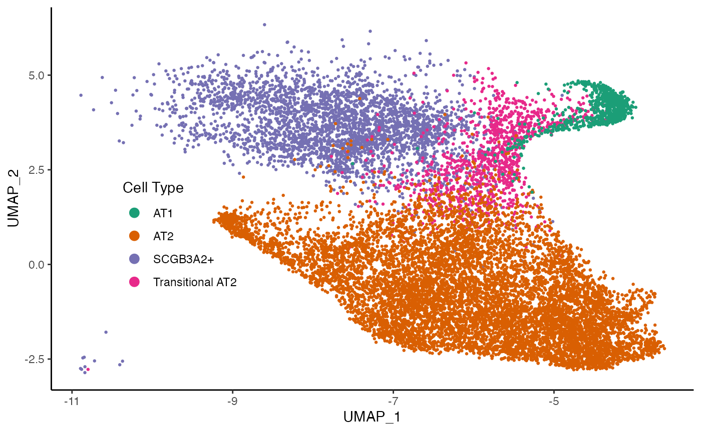
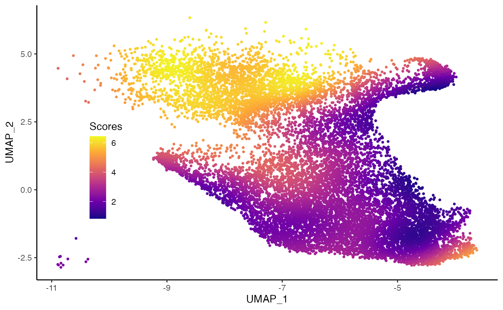
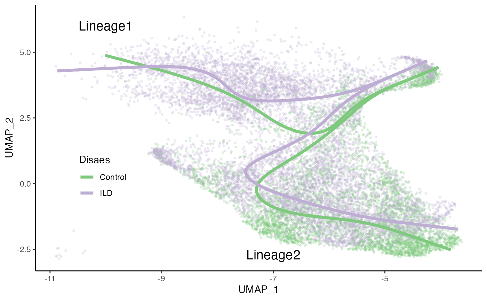
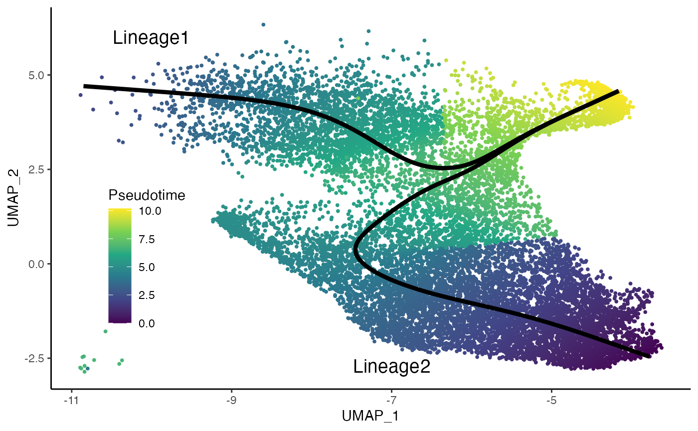
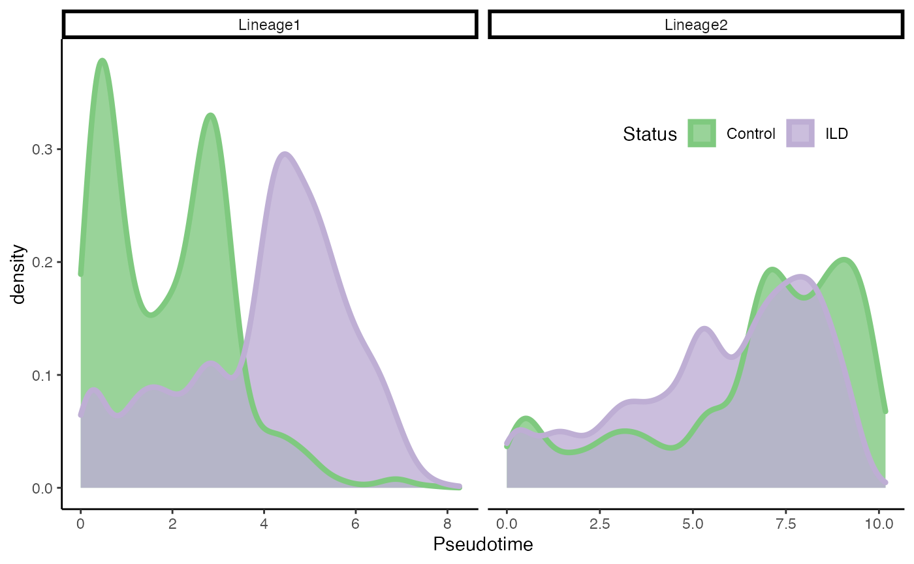
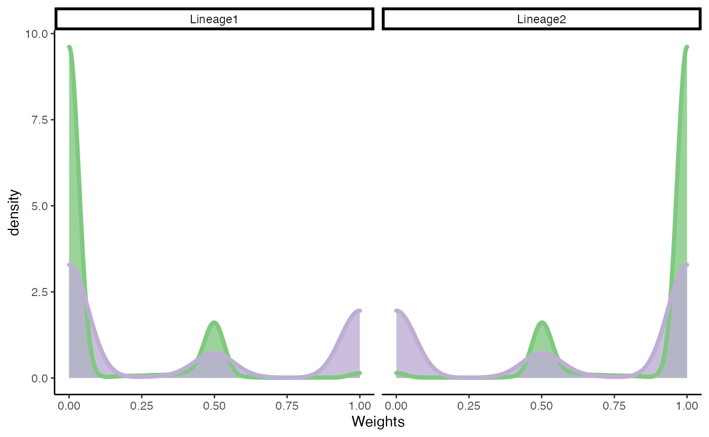
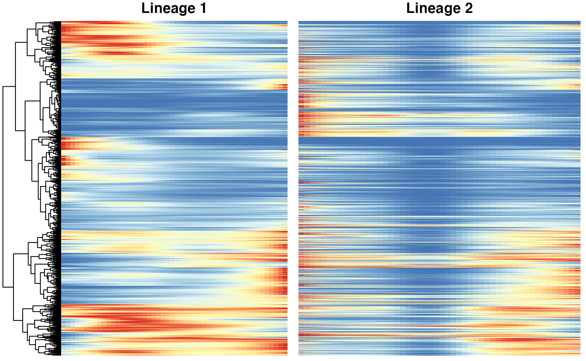

Fibrosis.Rmdlibs <- c("here", "tidyr", "dplyr", "Seurat", "scater", "slingshot", "cowplot",
"condiments", "ggplot2", "readr", "tradeSeq", "pheatmap", "fgsea",
"msigdbr", "scales")
suppressMessages(
suppressWarnings(sapply(libs, require, character.only = TRUE))
)## here tidyr dplyr Seurat scater slingshot cowplot
## TRUE TRUE TRUE TRUE TRUE TRUE TRUE
## condiments ggplot2 readr tradeSeq pheatmap fgsea msigdbr
## TRUE TRUE TRUE TRUE TRUE TRUE TRUE
## scales
## TRUErm(libs)
theme_set(theme_classic() +
theme(rect = element_blank(),
plot.background = element_blank(),
strip.background = element_rect(fill = "transparent")
))fibrosis <- condimentsPaper::import_fibrosis()data("fibrosis", package = "condimentsPaper")Reduced dimension coordinates are obtained from the original publication.
df <- bind_cols(reducedDim(fibrosis, "UMAP") %>% as.data.frame(),
colData(fibrosis)[, 1:14] %>% as.data.frame())
ggplot(df, aes(x = UMAP_1, y = UMAP_2, col = Status)) +
geom_point(size = .5) +
scale_color_brewer(palette = "Accent") +
labs(col = "Disease") +
theme(legend.position = c(.15, .4),
legend.background = element_blank()) +
guides(col = guide_legend(override.aes = list(size = 3)))
ggplot(df, aes(x = UMAP_1, y = UMAP_2, col = celltype)) +
geom_point(size = .5) +
scale_color_brewer(palette = "Dark2") +
labs(col = "Cell Type") +
theme(legend.position = c(.2, .4),
legend.background = element_blank()) +
guides(col = guide_legend(override.aes = list(size = 3)))
scores <- condiments::imbalance_score(
Object = df %>% select(UMAP_1, UMAP_2) %>% as.matrix(),
conditions = df$Status, k = 20, smooth = 30)
df$scores <- scores$scaled_scores
ggplot(df, aes(x = UMAP_1, y = UMAP_2, col = scores)) +
geom_point(size = .7) +
scale_color_viridis_c(option = "C", breaks = c(0, 2, 4, 6)) +
labs(col = "Scores") +
theme(legend.position = c(.15, .4),
legend.background = element_blank())
To estimate the trajectory, we use slingshot (Street et al. 2018).
fibrosis <- slingshot(fibrosis, reducedDim = 'UMAP',
clusterLabels = colData(fibrosis)$celltype,
start.clus = 'AT1', approx_points = 100)set.seed(821)
topologyTest(SlingshotDataSet(fibrosis), fibrosis$Status)## Generating permuted trajectories## Running KS-mean test## method thresh statistic p.value
## 1 KS_mean 0.01 0.04183036 2.964406e-12fibrosis_SCGB3A2 <- slingshot(fibrosis[, fibrosis$celltype != "SCGB3A2+"],
reducedDim = 'UMAP',
clusterLabels = colData(fibrosis[, fibrosis$celltype != "SCGB3A2+"])$celltype,
start.clus = 'AT1', approx_points = 100)
set.seed(821)
topologyTest(SlingshotDataSet(fibrosis_SCGB3A2), fibrosis_SCGB3A2$Status)## Generating permuted trajectories
## Running KS-mean test## method thresh statistic p.value
## 1 KS_mean 0.01 0.002720157 1rm(fibrosis_SCGB3A2)sdss <- slingshot_conditions(SlingshotDataSet(fibrosis), fibrosis$Status)
curves <- bind_rows(lapply(sdss, slingCurves, as.df = TRUE),
.id = "Status")
p4a <- ggplot(df, aes(x = UMAP_1, y = UMAP_2, col = Status)) +
geom_point(size = .7, alpha = .2) +
scale_color_brewer(palette = "Accent") +
labs(col = "Disaes") +
geom_path(data = curves %>% arrange(Status, Lineage, Order),
aes(group = interaction(Lineage, Status)), size = 1.5) +
annotate("text", x = -10, y = 6, label = "Lineage1", size = 5) +
annotate("text", x = -7, y = -2.7, label = "Lineage2", size = 5) +
theme(legend.position = c(.15, .35),
legend.background = element_blank()) +
NULL
p4a
df <- bind_cols(
as.data.frame(reducedDim(fibrosis, "UMAP")),
slingPseudotime(fibrosis) %>% as.data.frame() %>%
dplyr::rename_with(paste0, "_pst", .cols = everything()),
slingCurveWeights(fibrosis) %>% as.data.frame(),
) %>%
mutate(Lineage1_pst = if_else(is.na(Lineage1_pst), 0, Lineage1_pst),
Lineage2_pst = if_else(is.na(Lineage2_pst), 0, Lineage2_pst),
pst = if_else(Lineage1 > Lineage2, Lineage1_pst, Lineage2_pst),
pst = max(pst) - pst)
curves <- slingCurves(fibrosis, as.df = TRUE)
ggplot(df, aes(x = UMAP_1, y = UMAP_2)) +
geom_point(size = .7, aes(col = pst)) +
scale_color_viridis_c() +
labs(col = "Pseudotime") +
geom_path(data = curves %>% arrange(Order),
aes(group = Lineage), col = "black", size = 1.5) +
annotate("text", x = -10, y = 6, label = "Lineage1", size = 5) +
annotate("text", x = -7, y = -2.7, label = "Lineage2", size = 5) +
theme(legend.position = c(.15, .35),
legend.background = element_blank()) 
progressionTest(fibrosis, conditions = fibrosis$Status, lineages = TRUE)## lineage statistic p.value
## 1 All 10.6182770 1.22521e-26
## 2 1 0.6388885 2.20000e-16
## 3 2 0.1998837 2.20000e-16df <- slingPseudotime(fibrosis) %>% as.data.frame()
df$Status <- fibrosis$Status
df <- df %>%
pivot_longer(-Status, names_to = "Lineage",
values_to = "pst") %>%
filter(!is.na(pst))
ggplot(df, aes(x = pst)) +
geom_density(alpha = .8, aes(fill = Status), col = "transparent") +
geom_density(aes(col = Status), fill = "transparent", size = 1.5) +
labs(x = "Pseudotime", fill = "Status") +
facet_wrap(~Lineage, scales = "free_x") +
guides(col = "none", fill = guide_legend(
override.aes = list(size = 1.5, col = c("#7FC97F", "#BEAED4"))
)) +
scale_fill_brewer(palette = "Accent") +
scale_color_brewer(palette = "Accent") +
theme(legend.position = c(.8, .8), legend.direction = "horizontal")
fateSelectionTest(fibrosis, conditions = fibrosis$Status)## note: only 1 unique complexity parameters in default grid. Truncating the grid to 1 .## Loading required package: lattice## note: only 1 unique complexity parameters in default grid. Truncating the grid to 1 .## Registered S3 method overwritten by 'cli':
## method from
## print.boxx spatstat.geom## # A tibble: 1 × 3
## pair statistic p.value
## <chr> <dbl> <dbl>
## 1 1vs2 0.647 7.95e-64df <- slingCurveWeights(SlingshotDataSet(fibrosis), as.probs = TRUE) %>% as.data.frame()
df$Status <- fibrosis$Status
df <- df %>%
pivot_longer(-Status, names_to = "Lineage", values_to = "ws")
ggplot(df, aes(x = ws)) +
geom_density(alpha = .8, aes(fill = Status), col = "transparent") +
geom_density(aes(col = Status), fill = "transparent", size = 1.5) +
labs(x = "Weights", fill = "Status") +
facet_wrap(~Lineage, scales = "free_x") +
guides(fill = "none", col = "none") +
scale_fill_brewer(palette = "Accent") +
scale_color_brewer(palette = "Accent")
We use tradeSeq (Van den Berge et al. 2020).
library(tradeSeq)
set.seed(3)
BPPARAM <- BiocParallel::bpparam()
BPPARAM$workers <- 3
icMat <- evaluateK(counts = fibrosis, sds = SlingshotDataSet(fibrosis),
conditions = factor(fibrosis$Status),
nGenes = 300, parallel = TRUE, BPPARAM = BPPARAM, k = 3:7)Next, we fit the NB-GAMs using 6 knots, based on the pseudotime and cell-level weights estimated by Slingshot. We use the conditions argument to fit separate smoothers for each condition.
library(tradeSeq)
set.seed(3)
fibrosis <- fitGAM(counts = fibrosis, conditions = factor(fibrosis$Status), nknots = 6)condRes <- conditionTest(fibrosis, l2fc = log2(2), lineages = TRUE)
condRes$padj <- p.adjust(condRes$pvalue_lineage1, "fdr")
mean(condRes$padj <= 0.05, na.rm = TRUE)## [1] 0.0002972946sum(condRes$padj <= 0.05, na.rm = TRUE)## [1] 3conditionGenes <- rownames(condRes)[condRes$padj <= 0.05]
conditionGenes <- conditionGenes[!is.na(conditionGenes)]patRes <- patternTest(fibrosis, l2fc = log2(2))
patRes$padj <- p.adjust(patRes$pvalue, "fdr")
mean(patRes$padj <= 0.05, na.rm = TRUE)## [1] 0.1574202sum(patRes$padj <= 0.05, na.rm = TRUE)## [1] 1589patternGenes <- rownames(patRes)[patRes$padj <= 0.05]
patternGenes <- patternGenes[!is.na(patternGenes)]library(RColorBrewer)
scales <- c("#FCAE91", "#DE2D26", "#BDD7E7", "#3182BD")
# plot genes
oo <- order(patRes$waldStat, decreasing = TRUE)
genes <- c("SCGB3A2", "SFTPC", "ABCA3", "AGER")
# most significant gene
ps <- lapply(genes, function(gene){
plotSmoothers(fibrosis, assays(fibrosis)$counts, gene = gene, curvesCol = scales,
border = FALSE, sample = .2) +
scale_x_reverse(breaks = 0:4/.4, labels = 4:0/.4) +
labs(title = gene, col = "Lineage and Condition") +
scale_color_manual(values = scales) +
theme(plot.title = element_text(hjust = .5),
rect = element_blank())
}
)## Scale for 'colour' is already present. Adding another scale for 'colour',
## which will replace the existing scale.
## Scale for 'colour' is already present. Adding another scale for 'colour',
## which will replace the existing scale.
## Scale for 'colour' is already present. Adding another scale for 'colour',
## which will replace the existing scale.
## Scale for 'colour' is already present. Adding another scale for 'colour',
## which will replace the existing scale.legend_gene <- get_legend(
ps[[1]] + theme(legend.position = "bottom") +
guides(col = guide_legend(title.position = "top"))
)
ps <- lapply(ps, function(p) {p + guides(col = "none")})
p6 <- plot_grid(
plot_grid(plotlist = ps, ncol = 2, scale = .95,
labels = c('a)', 'b)', 'c)', 'd)')),
plot_grid(NULL, legend_gene, NULL, rel_widths = c(1, 1, 1), ncol = 3),
nrow = 2, rel_heights = c(4, .5)
)Below we show heatmaps of the genes DE between lineages The DE genes in the heatmaps are ordered according to a hierarchical clustering on the first lineage.
### based on mean smoother
yhatSmooth <- predictSmooth(fibrosis, gene = patternGenes, nPoints = 50, tidy = TRUE) %>%
mutate(yhat = log1p(yhat)) %>%
group_by(gene) %>%
mutate(yhat = scales::rescale(yhat)) %>%
filter(condition == "ILD") %>%
select(-condition) %>%
ungroup()
heatSmooth_Lineage1 <- pheatmap(
yhatSmooth %>%
filter(lineage == 1) %>%
select(-lineage) %>%
arrange(-time) %>%
pivot_wider(names_from = time, values_from = yhat) %>%
select(-gene),
cluster_cols = FALSE, show_rownames = FALSE, show_colnames = FALSE,
main = "Lineage 1", legend = FALSE, silent = TRUE
)
heatSmooth_Lineage2 <- pheatmap(
(yhatSmooth %>%
filter(lineage == 2) %>%
select(-lineage) %>%
arrange(-time) %>%
pivot_wider(names_from = time, values_from = yhat) %>%
select(-gene))[heatSmooth_Lineage1$tree_row$order, ],
cluster_cols = FALSE, cluster_rows = FALSE,
show_rownames = FALSE, show_colnames = FALSE, main = "Lineage 2",
legend = FALSE, silent = TRUE
)
p7 <- plot_grid(heatSmooth_Lineage1[[4]], heatSmooth_Lineage2[[4]], ncol = 2)
p7
sessionInfo()## R version 4.1.0 (2021-05-18)
## Platform: x86_64-apple-darwin17.0 (64-bit)
## Running under: macOS Big Sur 10.16
##
## Matrix products: default
## BLAS: /Library/Frameworks/R.framework/Versions/4.1/Resources/lib/libRblas.dylib
## LAPACK: /Library/Frameworks/R.framework/Versions/4.1/Resources/lib/libRlapack.dylib
##
## locale:
## [1] en_US.UTF-8/en_US.UTF-8/en_US.UTF-8/C/en_US.UTF-8/en_US.UTF-8
##
## attached base packages:
## [1] parallel stats4 stats graphics grDevices utils datasets
## [8] methods base
##
## other attached packages:
## [1] RColorBrewer_1.1-2 caret_6.0-88
## [3] lattice_0.20-44 scales_1.1.1
## [5] msigdbr_7.4.1 fgsea_1.18.0
## [7] pheatmap_1.0.12 tradeSeq_1.7.04
## [9] readr_2.0.0 condiments_1.1.04
## [11] cowplot_1.1.1 slingshot_2.1.1
## [13] TrajectoryUtils_1.0.0 princurve_2.1.6
## [15] scater_1.20.1 ggplot2_3.3.5
## [17] scuttle_1.2.0 SingleCellExperiment_1.14.1
## [19] SummarizedExperiment_1.22.0 Biobase_2.52.0
## [21] GenomicRanges_1.44.0 GenomeInfoDb_1.28.2
## [23] IRanges_2.26.0 S4Vectors_0.30.0
## [25] BiocGenerics_0.38.0 MatrixGenerics_1.4.3
## [27] matrixStats_0.60.1 SeuratObject_4.0.2
## [29] Seurat_4.0.3 dplyr_1.0.7
## [31] tidyr_1.1.3 here_1.0.1
## [33] knitr_1.33
##
## loaded via a namespace (and not attached):
## [1] utf8_1.2.2 reticulate_1.20
## [3] tidyselect_1.1.1 htmlwidgets_1.5.3
## [5] grid_4.1.0 BiocParallel_1.26.2
## [7] Rtsne_0.15 pROC_1.17.0.1
## [9] munsell_0.5.0 ScaledMatrix_1.0.0
## [11] codetools_0.2-18 ragg_1.1.3
## [13] ica_1.0-2 future_1.21.0
## [15] miniUI_0.1.1.1 withr_2.4.2
## [17] colorspace_2.0-2 highr_0.9
## [19] rstudioapi_0.13 ROCR_1.0-11
## [21] tensor_1.5 listenv_0.8.0
## [23] labeling_0.4.2 GenomeInfoDbData_1.2.6
## [25] polyclip_1.10-0 farver_2.1.0
## [27] rprojroot_2.0.2 parallelly_1.27.0
## [29] vctrs_0.3.8 generics_0.1.0
## [31] ipred_0.9-11 xfun_0.24
## [33] Ecume_0.9.1 randomForest_4.6-14
## [35] R6_2.5.1 ggbeeswarm_0.6.0
## [37] rsvd_1.0.5 locfit_1.5-9.4
## [39] bitops_1.0-7 spatstat.utils_2.2-0
## [41] cachem_1.0.5 DelayedArray_0.18.0
## [43] assertthat_0.2.1 promises_1.2.0.1
## [45] nnet_7.3-16 beeswarm_0.4.0
## [47] gtable_0.3.0 beachmat_2.8.0
## [49] globals_0.14.0 goftest_1.2-2
## [51] timeDate_3043.102 rlang_0.4.11
## [53] systemfonts_1.0.2 splines_4.1.0
## [55] lazyeval_0.2.2 ModelMetrics_1.2.2.2
## [57] spatstat.geom_2.2-2 yaml_2.2.1
## [59] reshape2_1.4.4 abind_1.4-5
## [61] httpuv_1.6.1 tools_4.1.0
## [63] lava_1.6.9 ellipsis_0.3.2
## [65] spatstat.core_2.3-0 jquerylib_0.1.4
## [67] proxy_0.4-26 ggridges_0.5.3
## [69] Rcpp_1.0.7 plyr_1.8.6
## [71] sparseMatrixStats_1.4.0 zlibbioc_1.38.0
## [73] purrr_0.3.4 RCurl_1.98-1.4
## [75] rpart_4.1-15 deldir_0.2-10
## [77] pbapply_1.4-3 viridis_0.6.1
## [79] zoo_1.8-9 ggrepel_0.9.1
## [81] cluster_2.1.2 fs_1.5.0
## [83] magrittr_2.0.1 data.table_1.14.0
## [85] scattermore_0.7 lmtest_0.9-38
## [87] RANN_2.6.1 fitdistrplus_1.1-5
## [89] hms_1.1.0 patchwork_1.1.1
## [91] mime_0.11 evaluate_0.14
## [93] xtable_1.8-4 gridExtra_2.3
## [95] transport_0.12-2 compiler_4.1.0
## [97] tibble_3.1.4 KernSmooth_2.23-20
## [99] crayon_1.4.1 htmltools_0.5.1.1
## [101] tzdb_0.1.2 mgcv_1.8-36
## [103] later_1.2.0 lubridate_1.7.10
## [105] DBI_1.1.1 MASS_7.3-54
## [107] babelgene_21.4 Matrix_1.3-4
## [109] cli_3.0.1 gower_0.2.2
## [111] igraph_1.2.6 pkgconfig_2.0.3
## [113] pkgdown_1.6.1 plotly_4.9.4.1
## [115] spatstat.sparse_2.0-0 recipes_0.1.16
## [117] foreach_1.5.1 vipor_0.4.5
## [119] bslib_0.2.5.1 XVector_0.32.0
## [121] prodlim_2019.11.13 stringr_1.4.0
## [123] digest_0.6.27 sctransform_0.3.2
## [125] RcppAnnoy_0.0.18 spatstat.data_2.1-0
## [127] fastmatch_1.1-0 rmarkdown_2.9
## [129] leiden_0.3.8 edgeR_3.34.0
## [131] uwot_0.1.10 DelayedMatrixStats_1.14.0
## [133] kernlab_0.9-29 shiny_1.6.0
## [135] lifecycle_1.0.0 nlme_3.1-152
## [137] jsonlite_1.7.2 BiocNeighbors_1.10.0
## [139] limma_3.48.3 desc_1.3.0
## [141] viridisLite_0.4.0 fansi_0.5.0
## [143] spatstat.linnet_2.3-0 pillar_1.6.2
## [145] fastmap_1.1.0 httr_1.4.2
## [147] survival_3.2-11 glue_1.4.2
## [149] spatstat_2.2-0 png_0.1-7
## [151] iterators_1.0.13 class_7.3-19
## [153] stringi_1.7.3 sass_0.4.0
## [155] textshaping_0.3.5 BiocSingular_1.8.1
## [157] memoise_2.0.0 e1071_1.7-7
## [159] irlba_2.3.3 future.apply_1.7.0